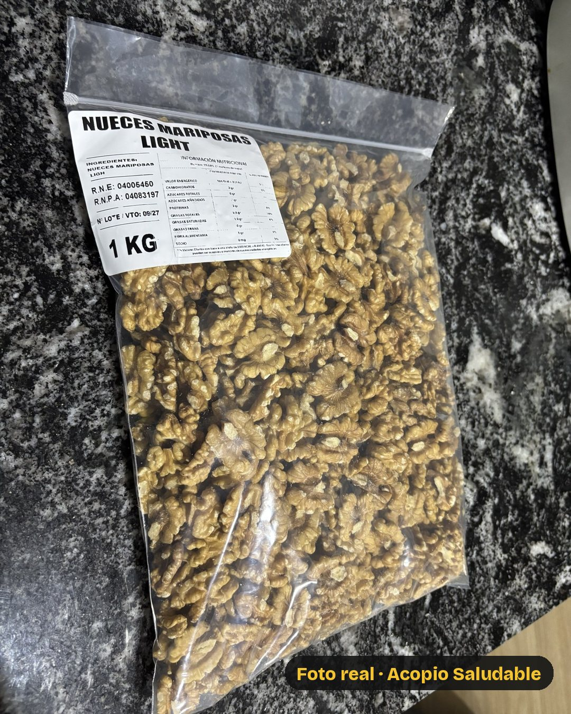
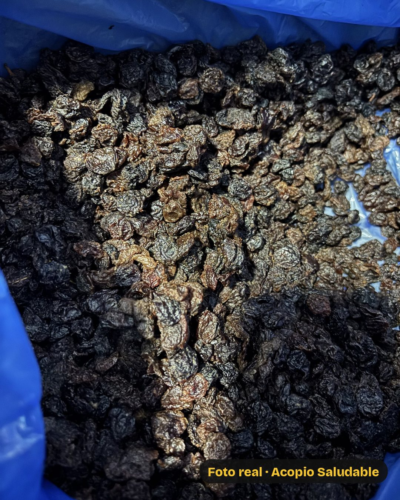

Acopio Saludable
5/5
Kit Pan Dulce
Lo armamos
en el día

1 kg · Nuez

1 kg · Pasas
+ 500 g de chips de chocolate
Con esta medida, alcanza para
unos 14 panes
de medio kilo.
Kit Pan Dulce ·
3541 51-9630